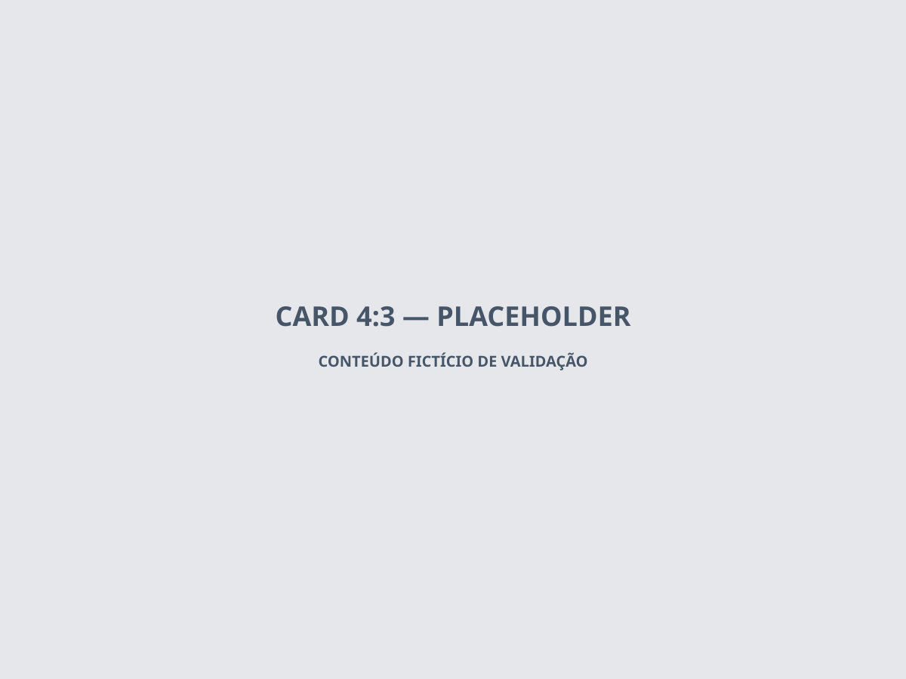

Ponto fictício
Mirante Vale das Araucárias
Mirante fictício criado para validar páginas de ponto turístico, clima e recomendações próximas.
Natureza
Mirante fictício criado para validar páginas de ponto turístico, clima e recomendações próximas.
NaturezaParque fictício usado para validar filtros outdoor, atividades sem custo e calendário.
NaturezaEspaço cultural fictício usado para validar conteúdo indoor, eventos e páginas editoriais.
CulturaCafé parceiro fictício criado para validar página comercial, contato, roteiro e analytics do parceiro.
Cafés GastronomiaRestaurante fictício para testar horários, contato externo e recomendação contextual de almoço.
GastronomiaAteliê fictício para validar experiências com reserva, conteúdo editorial e parceria.
Cultura Compras locais